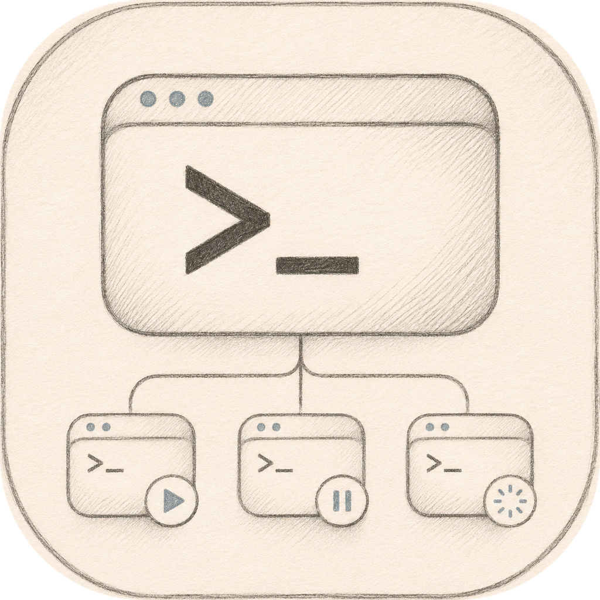
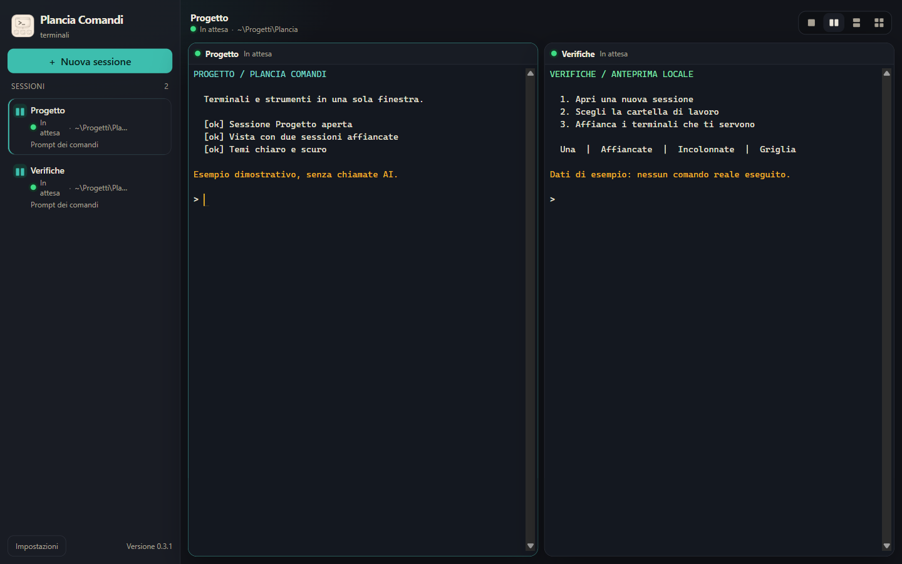

Apri e organizza
Scegli shell e cartella iniziale, assegna un nome e passa da una sessione all’altra dalla barra laterale.
Fino a 12 sessioni
Plancia ComandiTerminali desktop · open source
I tuoi terminali, insieme.
Shell e CLI in una sola finestra. Affianca le sessioni e riconosci a colpo d’occhio quelle che richiedono la tua attenzione.

Una plancia per il tuo lavoro
Apri fino a 12 sessioni con la shell e la cartella che ti servono. Le CLI si installano separatamente: qui ritrovi i tuoi strumenti, nello stesso spazio.
Scegli shell e cartella iniziale, assegna un nome e passa da una sessione all’altra dalla barra laterale.
Fino a 12 sessioniUna, Affiancate, Incolonnate o Griglia: scegli la vista adatta alle sessioni aperte, senza spostare finestre sul desktop.
Quattro visteStati, pallini e notifiche aiutano a trovare una sessione in attesa. Il rilevamento è euristico: controlla sempre il terminale.
Al lavoro · In attesa · AzioneDentro l’app
Interfaccia italiana o inglese, tema di sistema o scelta manuale. Guarda la finestra e le impostazioni della versione 0.3.1.
Sul tuo computer
Plancia Comandi è un terminale desktop locale. Non integra un provider AI e non invia autonomamente l’output a un modello.
I comandi hanno i tuoi permessi e possono leggere file, modificarli e usare la rete. La finestra non limita i permessi delle shell.
Autenticazione, API e invio dei dati dipendono dai programmi che avvii. Scegli cartelle e contenuti con attenzione.
Lingua, tema e vista restano sul computer. Le sessioni non vengono ripristinate all’uscita; l’output in memoria non è un archivio.
Pronto a iniziare · 0.3.3
Progetto in sviluppo iniziale. Scarica la versione adatta al tuo computer e consulta il manuale per il primo avvio.
WINDOWS
Installer NSIS oppure versione portabile. Entrambi i pacchetti sono per Windows x64.
Checksum SHA-256 ↗MACOS
DMG e ZIP per i Mac con chip Apple Silicon. Non è disponibile un pacchetto verificato per Intel.
Checksum SHA-256 ↗Pacchetti non firmati; macOS senza notarizzazione. SmartScreen e Gatekeeper possono mostrare avvisi. Verifica i checksum e consulta le istruzioni prima di aprire un download.
Per Linux non è pubblicato un pacchetto 0.3.3 e non è registrata una prova personale. I sorgenti richiedono Git e Node.js 22.12 o successivo; su macOS e Linux servono anche gli strumenti di compilazione di node-pty. Su Windows si usano le prebuild.
git clone https://github.com/gloutchov/Plancia-Comandi.git
cd Plancia-Comandi
npm ci
npm run devLe CLI che vuoi usare nei terminali si installano e autenticano separatamente.
Requisiti e installazione nel manuale ↗